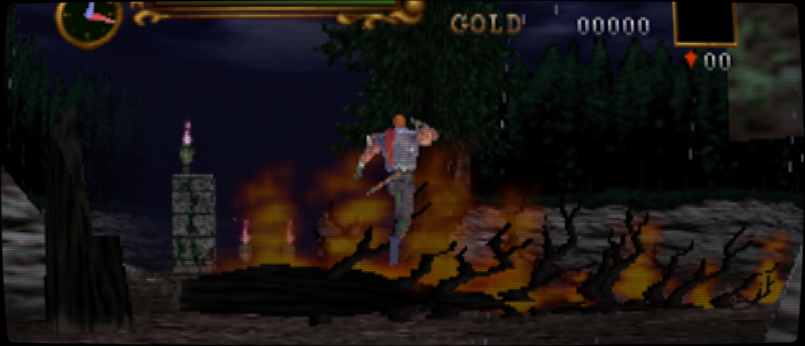
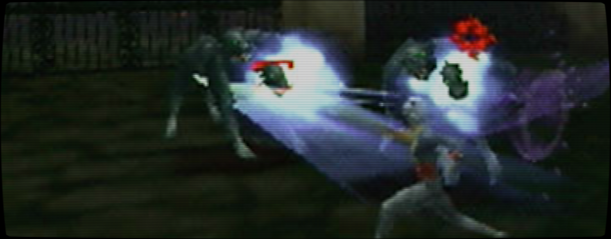
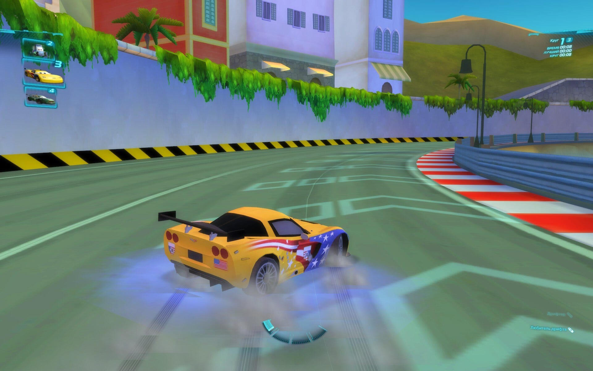
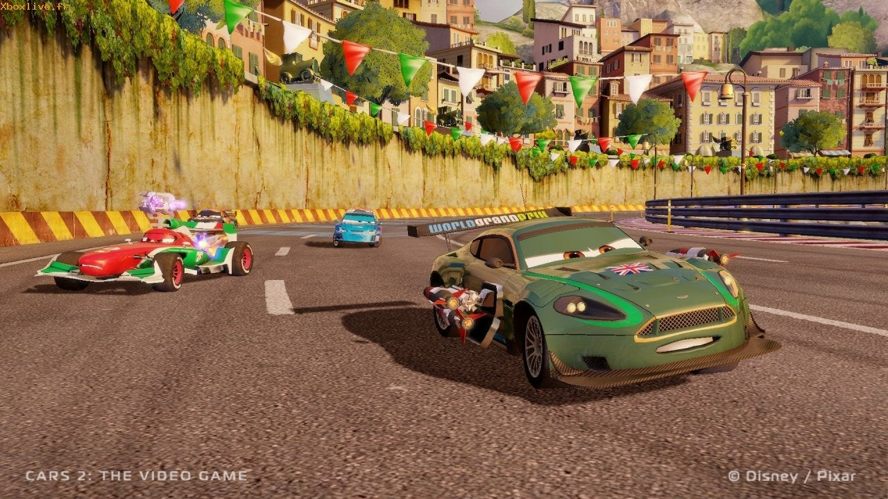
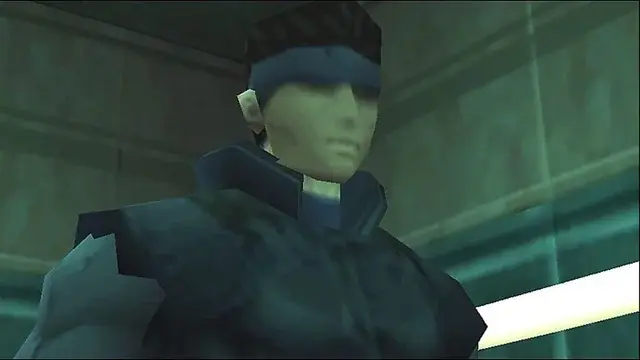
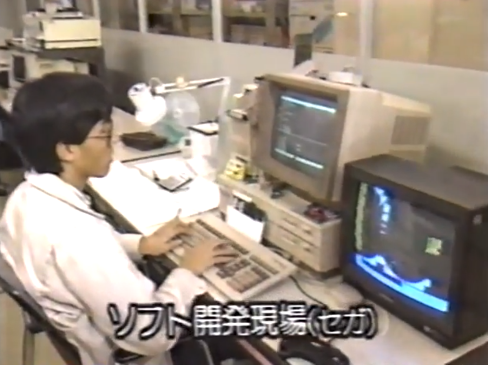

Feel free to read this over on my blog(edit: Link is fixed, whoops, linked my local test server), now with Dark Mode(check by the red pixel side bar thing)! Hover text should work better on newer mobile devices too. The blog version has a lot more images and videos, but feel free to read either!
At what point is a game unjustly maligned? When is a Flawed Gem merely a stone? When we say a game was brave and experimental... was it? Or was it a predictable failure of the times it was made? Does a failed product need to be secretly kinda good, or important, or influential to deserve respect?
No. And while I am unsure exactly how I fall on Castlevania 64 and it's strange seque-xpansion, I walk away respecting these games. I find myself dwelling on how people try to rehabilitate flawed titles like these. Because does a game need to be good to be enjoyed? Does it have to be good to appreciate the high level of skill that made into making it? Does a game have to be good to be under appreciated?
No.
Castlevania 64

Castlevania 64 is a miserable game to play. Not in a "turned the limitations into a feature" way like Metroid II. Not even in a "the combat is crummy, but you can work around it and that's not the point of the game anyways" way like King's Field. Unfortunately, combat in this game is both bad and a central focus. As is platforming, complete with a poorly controllable, sometimes downright ungovernable camera.
Reinhardt moves like a bus. You can lock on, but rotating fast enough to actually use that lock is a challenge. Enemies in the abysmal first area, the Forest of Silence, spawn constantly. It feels like you're playing Spartan-X/Kung Fu, walking a few steps, whipping a few foes, trying to turn to get the ones behind you, walking a little farther, hear a skeleton spawn, turn and whip again.
Your reward for trying to explore and puzzle solve in this samey brown space is awful, high stakes platforming. With temperamental jumping physics. On blocks that look like they were taken from a developer test level.
Castlevania 64 does not put its best foot forward. This is not so much a factor of developer skill, but industry knowledge. Even in 1999 we were still trying to figure out these 3d games, especially these types of console action games. Most games of this era with camera control were slow and lower stakes. To make navigating these 3d worlds tolerable, a lot of these games needed to be about movement. Action games had a different issue. Virtually all successful action games of this period were some kind of shooter. An FPS like Goldeneye ties your camera to your movement, a game like Metal Gear Solid locks things into a virtual 2d playspace. A game like Omega Boost uses rail-shooter like controls and homing weapon lock-on systems to lesson the controller load on the game. Melee games? Early 3d fixed camera beat-em-ups, or slow, more adventurous games like Zelda, which also have less of an emphasis on platforming style movement. Even much later, genre defining games like Devil May Cry, which finally began cracking the code, did so with limited camera movement. There is a reason this era is dominated by Collectathons, Racing games, and FPSs.
To make intense action work, often something has to be taken away. Even in 2d, the intense, high stakes action of a game like Contra is made manageable by removing the player's ability to control the height of their jumps. This is something most players don't even realize. Players can't manage everything, you design around what you want your players to focus. We can't expect you to feather the jump button while shooting at the same time!
Castlevania 64 has big ambitions, so it tries to offload a lot. Reinhardt's whip as a massive range to it, while Carrie's projectiles home-in belligerently. The Lock-on button, while fussy, is trying to move your focus onto movement and timing rather than aiming. Even the multi modal camera, while a failure, was an attempt to solve a difficult problem that we struggle with even decades later.
Games do not progress forward by bad designers making bad decisions, waiting until a good designer shows us how things are done. We need good designers to try and fail too. Like a scientific paper that fails to prove its premise, this failure is important. You can't know if you can make a fully 3d castlevania without compromise until you try and make one.
These were risks that made sense for the times and it is important to contextualize these failures in their era. While the game was seen as having problems in it's day, the game was still largely well received. Reviewers liked it. My friends at the time had a more... luke warm response, but nothing approaching hate. The abysmal reputation this game has came after a few years time, as games continued to evolve at the breakneck pace. A curious, if flawed attempt at 3d action that became a miserable, backward experience only a few years later.
It's hard to imagine design moving that fast when in 2024, when we've been making the same genre of AAA games for over 10 years. I could write a whole essay how this pace damaged the brains of those who lived though it, numbing our abilities to reassess what is old, outside the lens of nostalgia. So what does Castlevania 64 do that is worth reassessing?
It's hard to understate how much damage the Forest of Silence did to me. Where many games try to start on their best foot, Castlevania 64 starts by highlighting all of it's flaws, a painful preview of what this game could not succeed at being. I almost quit the game right here when it turned out I didn't make a save file properly and had to replay most of the first level again. This game is even worse than people say it is!! Your failures rarely felt like your own. Even the cool giant skeleton boss struggles with the systems of the game. You can't tell if you're not hitting him because of a failure of the lock-on system or some invulnerability. The fundamental, reliable feed back that made the old Castlevanias work was missing.
Switching to Carrie helped a lot. While she didn't make combat good, she helped to minimize one of the worst parts of the game. Getting out of the Forest and to the Castle Walls was a relief. A slower paced stage, with platforming that, while still questionable, was kinda the right fit for the game and it's physics. Still the same respawning skeletons and dubious lock-ons, and bizarrely implemented Medusa heads, but a step up enough to get a little farther...
The Castle Villa
The Villa is what changed my perception of this game and what it could be. Combat and platforming were de-emphasized, a small nuisance to keep you on your toes as you explore. The Villa is about vibes. Peaceful yet eerie music plays, giving relaxing you while giving a slight hint that things are unwell. A gentle storm blows by, lighting gently flashing silently in the distance like a hot summer day.
... It's melancholy. You explore listlessly. You find a few NPCs to talk to. The little fighting you do is against frail Stained Glass Knights and ineffective Ghosts. You encounter a well dressed man, a demon, who wishes not to fight, but do business, selling you goods as he sits, legs politely, legs casually crossed with comfortable sophistication. He's ready to aid you. He knows what the contract says...
This is one of the few places you use the day/night cycle. Its overall inclusion feels half baked, but in this moment, in this thin slice of video game, we see the vision. A living world, moody interiors, solving puzzles in a haunted house. NPCs with routines. Vincent, the Vampire Hunter, sleeps during the night and walks around during the day. Rosa shows up at dawn to water her white flowers. You can use the mirrors about the rooms to identify vampires. You can visit the hedge maze (and, you know, get chased by a guy with a chainsaw). In this small section of game there is so much atmosphere, so much intrigue, a deep wanting for something larger. It feels bigger than it actually it. It feels like the team had 3 different ideas of what Castlevania 64 should be. This is the vision of Castlevania 64 that lost, but this small shard of it still remains, a beautiful, fleeting moment. This is what won me over. It was walking in to the Villa when I thought, for a moment, that maybe, just maybe, this game was actually great.
... And then it was gone.
Teased Highs and Crushing Lows
The game never reaches this high point again, though I did not know it as I played through the game blind. I went into every stage with a little hope that we'd see more of the other Castlevania 64 that I just saw.
You get a bit of it in the Castle Center, a sprawling map that represents actually being in Castlevania. You explore rooms, finding Pre World War I technology in development. You find Lizard-Men cloning chambers. You find crude electric engines, radio equipment, and scale a scale model of a zeppelin. It feels like Dracula is preparing for war. You realize the era this game is in. It is, for its faults, immersive. You look at all these devices with deep curiosity, knowing some of them will be important at some point. Despite not being the Villa, the game is succeeding. Hell, you find an ASTROLAB!
... And then you pick up the Magic Nitro.
This is easily the lowest point of the game. You carry a volatile explosive, that will explode if you jump, fall, or get hit, through this whole sprawling level, taking roundabout paths to avoid obstacles. You spend minutes in slow moving gears to avoid climbing a waist high wall. You do all this and find the detonator and go to set it off, only to realize... you did it too soon. It can't blow up the magic shield on the wall. I thought this WAS to destroy the magic shield!
You have to go, blow up another wall, find another secret, and then do this long, arduous path all over again. It is miserable. It is boring. It is frustrating. It sucks. Most flaws in this game are explainable. Making games is hard! But this... this is a place where they fucked up royally and the game suffers massively for it. Many players have quit on this exact spot, deciding that Castlevania 64 wasn't worth the effort. They didn't miss out on much after this point.
Your reward for this is fighting a behemoth, whose body crumbles and melts as you harm it, who would be a cool set piece if he wasn't designed to be almost impossible to dodge. A high point gets ruined by a boss you have to beat using stage collision exploits. What should have been the stage that made the game becomes one of its biggest flaws.
From here, things get more even. The "Towers" are mostly okay stages, but they are about platforming and combat. There is some atmosphere to be had. The Tower of Science had a pretty cool vibe! The tower of Sorcery... sucks. But it sucks in the way late 90s platformers suck. Reinhardt's stages focus more of combat with few, larger enemies. That's the type of combat that works the best with the systems of this game. These stages function, but they feel like filler.
Time
Then it's time for the Clock Tower. You enter the Clock Room, go and fight your character specific boss, and then brave the clock tower. The Clock Tower feels like it had to be included. Aesthetically it doesn't really fit, and the dicey platforming is mostly just asking players too much of the limited control they've been given. Like the other towers, it's not terrible, and a few rooms even begin to feel like they might have a sense for what future platforming challenges in the genre might look like.

You reach the Castle Keep, one of the saddest renditions of it in any game. Still, it has some majesty. It's just you vs Dracula... well, unless you bought too much from the shop. If you did, Renon will show up in one of the 'sub-keeps' to lay the terms of the contract that you didn't read. He now has claim to your soul and is ready to fight for it. If you didn't, he politely says farewell. World War I is coming after all, and the death of millions is a time of great business for a Demon.
You continue further, another sub-keep to pass through... unless you took too long to get here. Then Vincent shows up as a vampire. You took so long that the old hunter beat you here, only to be defeated and turned. You put the old man down.
Now, on to the proper Keep. You fight an... honestly pretty decent 3d rendition of the classic Castlevania Dracula fight, a boss fight more functional and varied than most you've fought throughout the game. Dracula is dead, The Keep is collapsing, and it's time to escape!
I don't want to get into all the plot details(though some of it in this, and Legacy of Darkness, seem fun for Castlevania lore nerds), but it turns out the mysterious child thats been floating around is the real Dracula. Only you wouldn't know it unless you beat the game fast enough to keep Vincent alive. The old man throws holy water at a child because he's a professional and he knows something is up!
This is the greatest use of the Time mechanic in the game. It makes sense, in a fun, immersive way. The time mechanics are generally underutilized, but this usage is beautiful.
The last boss is fine, a weird centipede desert Dracula. It does its job. The games ending cinematics fairly in depths. Slow by modern standards, but they have some of that mood and attention to detail the best parts of this game have. The people who made this game cared deeply about it.
Time has not been kind to this game. Both because of the era it was released in, the Pain Band, but also because of us. It is an easy game to hate, especially if you only played the first stage. If that isn't enough, Magic Nitro might be what breaks your spirit. It's easy to magnify these issues in our head as time goes on. It's harder to stop and look at this game and what it tried to accomplish.
This game was made by talented professionals with opinionated, forward thinking ideas. This was a KCEK's first 3d game and the fact they managed what they did is a miracle. They couldn't quite bring their vision to fruition, but they still managed a good critical response, and... possibly decent sales? This is a game that succeeded in its time. Like Vincent, it was time that killed it.
We don't, in 2024, need to say it is a good game... but it was a good effort. I respect Castlevania 64.
Legacy of Darkness

Legacy of Darkness is an updated and remixed version of Castlevania 64, adding in material and characters cut from the original development. It comes off feeling like an expansion pack, down to including slightly revamped versions of Carrie's and Reinhardt's quests. There are arguments on whether or not this is a straight upgrade to 64, or more of a side-grade. Conventional advice is "Just play Legacy of Darkness" but many of the people who've played both prefer Reinhardt's and Carrie's original stages in 64. Both need to still do the awful Magic Nitro segment that mostly seems unchanged, unfortunately...
I didn't have it in me to play everything, but I figured I'd owe it to the game to at least try Cornell's story. A benefit to this is the fact his versions of the "towers" are what replace Carrie and Reinhardt's so I could see all the redone content.
Cornell is pretty cool. He looks like Yoshiaki Kawajiri character. He does Hokuto Shinkin in his opening cutscene. He's a complete wolf-whore of a man, in his slutty plunge shirt, and his tiny little waist cincher. Waist training is how one controls the manbeast inside us, after all...
Cornell is, compared to the others, overpowered, but in a way that benefits the game. He's so strong that I never even realized you could transform into a werewolf and still breezed through the game. The combat in the game isn't great, so being able to air slash your way through everything just helps with the pace. No longer is the first stage the dreadful Forest of Silence, but instead a ship that you freely explore. It's low stakes platforming, the type that makes early 3d platformers fun. It lets you enjoy being somewhere, with sprinkles of action. A serpent pierces the ship's hull and it begins to sink, forcing you to escape. You jump off and fight it on a bridge. The game feels like it should be made up of stages like this. Moody open action areas, mixed with in-between segments like the Villa. The Forest of Silence is overhauled. It's not a great stage, but a fine one now. The respawning skeletons have been removed, allowing you to clear out areas and breath a little. The stupid platforming is a bit more reasonable, and looks a bit more integrated into the stage.
The game starts throwing more time puzzles at you, but these are mostly a matter of opening special doors. As Cornell has no time limit on his route, using the magic cards that change the time of day becomes of no consequence. It fixes the mechanic in only the driest sense. One later stage sees you burning through dozens of these cards... while inside, separate from any actual day and night cycle. It's a completely abstracted lock and key "puzzle", without any actual puzzling. The area, the Tower of Art, is at least one of the somewhat immersive areas of Cornell's quest. He has no Castle Center equivalent. His renditions of stages are much cleaner, much more focused on action and platforming. They improve the weakest parts of the game, while doing nothing for the game's strongest aspects. The majority of Cornell's story mode feels like disconnected stages. One of them is like a strange Egyptian tomb for some reason? The game is more technically competent, but less inspired, focusing less on experimental ideas and more on making sure the content was decent.
They had to give up on their other visions. This isn't a bad choice. It's the most realistic one they could have made at the time.
The game ends with a horrible final boss where each attempt you desperately try and figure out what the hell the game wants from you. The camera is fixed, your range of motion is small, and Not Dracula's attacks are so powerful that you'll die quickly.
The boss is, in actuality, quite easy once you know what it wants, but to figure it out you have to go through his first phase over and over again. Oh well, at least he looks cool as all hell. There are some fun story beats and details, but they're all back-loaded. Still, they work, and certain reveals and twists felt appropriate, clever, and well earned for a game of this era.
I didn't have it in me to try Henry's story mode. Most people seem to hate it, but the free exploration aspect to save children seems interesting! The fact it plays into Cornell's story mode(Henry is a child he saved in the VIlla) and actually uses the time system in a meaningful way(You have a real, hard, time limit that is clearly presented to you) is all pretty neat. Even the aesthetic of 'armored knight with handguns' is cool, creative, and fitting of the era the game is set in.
Legacy of Darkness shows that most of the gameplay ideas of Castlevania 64 could work. It's not excellent, but by focusing on a few solid goals, it ends up mostly a competent game. It feels weird, mourning a game being competent, but playing Castlevania 64, it was clear all the different ways that game could have turned out. A glimpse into dozens of alternative futures. But no, Legacy of Darkness is the timeline ended up with. It's fine, worthy of a playthrough by the curious.
It's weird, a few people told me to skip Castlevania 64, but by playing it first I feel like I appreciate both games more for what they are. Most of the important elements of Castlevania 64's identity are in Legacy of Darkness, but I don't know if I would have felt the same way about these things if I had to play through Cornell and Henry first. It was important to play through the original content first, to see the unsure, unfocused initial attempt. Playing 64 let me play through Cornell's story and feel what was improved, and what was let go of.
Castlevania 64 is a malformed attempt to try and imagine a new kind of future for Castlevania. Legacy of Darkness is a game about having reasonable expectations and a clear vision.
Also y'all need to stop doing this! I thought this game was ugly for years, but it's because every video and screenshot is played at like HD or 4K where all the implied details vanish, all the billboard sprites look fake as fuck, and everything just looks like a big smear.
Old games are like movie props. You're not supposed to actually look at them that up close!!

Don't upscale consoles older than the Dreamcast. Please. If you care about me and want me to be happy in life promise me that this is something you will never do. You wouldn't let someone leave motion smoothing on their TV because you care about them? Right. Then please understand why I'm telling you so strongly that this is an obligation
I'm going to disagree with this one; even at the time, a lot of these games had contemporary 3D-accelerated PC ports that, owing to limitations with some of the cards of the era (cough3dfxcough), would run at 640x480 minimum (sometimes 512x384), but they looked fine. Good, even. Better than the console releases in a few ways, usually! Though not always (IIRC Mega Man Legends has broken shadows on PC, but otherwise it upscaled quite gracefully).
Though, obviously, the CV64 shots above are clearly not an example of this. The HUD is, in my opinion (it looks crisp), but the candelabra... yeah, something is clearly broken there. I know on MiSTer's N64 core, changing one of the settings away from the default "as the console did it" values results in ugly black outlines on the edge of the graphic like that (I think it was VI Anti-Aliasing? Not sure though). That clearly is an error and is best fixed, somehow; if the only way to do so at this time is to run at 1x scale, then I guess so be it, though I don't know that it's intrinsic to running at 2x scale or such given Legacy of Darkness has the option to do as much on real hardware and generally doesn't suffer visually for it (other than running way worse than a Rareware FPS in four-player, bad enough that I wouldn't actually recommend playing it that way on a real N64).
Now, to go on a different tack and respond to the original post. I reject the notion that Castlevania 64 is a bad game - I really like it, actually, and don't share the gripes about its combat or platforming shared in the opening paragraphs. (That being said, I won't dispute that both have issues. For combat, the subweapons don't feel like they have obvious niches like they do in other Castlevania games, and some encounters definitely don't feel great no matter what - the bone dragons at the top of one of the towers in the Castle Wall level, for instance, always feel like I'm better off powering through them with healing items rather than attempting to skillfully dodge their flames. For platforming, I hate the dodge maneuver that happens if you tilt the stick in any direction other than forward when jumping from a standstill, it's caused me to miss jumps a few too many times.)
However, I definitely agree with the core theses of "good designers need to make mistakes to make better games later" and "games that are legitimately bad for this reason or that still have value for analysis". Like, I don't know why, but several games I'd struggle to call "good" still had setpieces that really stuck with me. Two examples that immediately come to mind are the library stage in Prince of Persia 3D, and one of the Starbearer's levels in KISS: Psycho Circus: The Nightmare Child.
The library in PoP3D is tall and wide, and it's a very striking visual. Footholds around the edges are few, and missing jumps is certain death from just how far down the hole in the center goes, creating some decent tension as well. Of course, it's still Prince of Persia 3D, so the actual act of climbing it is rather clumsy; if you're a fan of Core Design Tomb Raider as I am then the platforming parts aren't so bad (plus you can quicksave anywhere, which does nullify some of the tension - at least, on PC, the DC version has dedicated save locations so one false jump can have you repeating several minutes' worth of jumps just to get back after dying), but I've always found the combat atrocious; at best I can sort of luck my way through a fight with no damage, but all the nuances of feinting an attack in a given direction so the enemy doesn't just immediately block every attack you through never really clicked for me.


Meanwhile, the KISS Psycho Circus stage in Starbearer's part of the campaign, the Water Realm, shrinks you rat-size after turning a corner, forced to press onward through an overlarge bookshelf, before turning another corner and finding yourself normal size again. The game itself is a far sight better than PoP3D is, though I tend to think of it as above-average more than outright good. The combat has a tendency to rely heavily on monster generators you have to shoot to destroy, and they pump out those monsters quite rapidly. Plus, I recall an enemy in The Beast King's segment, the Earth Realm, having a conal attack that hitscans, has no wind-up, and cannot be avoided by any means (it goes through cover, if I recall correctly), which is just complete ass design for an FPS of that vintage (or any, really). In spite of my misgivings, the level design still did feel pretty interesting? Like they don't always get as inventive as the part I highlighted, but it twists and turns all over the place, looping back over itself in multiple spots like a good Quake map would. I shouldn't oversell it with a comparison as lofty as that, really, but nevertheless I found myself liking that aspect quite a bit.


Admittedly, both are toying with the same aspect: large scale. That does make me wonder if it's just that that's striking me, here. Nevertheless, it's this kind of thing that leaves me wondering what else is hiding in games that conventional wisdom says to stay away from.
Video citations for the screenshots:
- "Prince of Persia 3D - Full Game Walkthrough" by AlphaYellow
- "Kiss: Psycho Circus: The Nightmare Child | PC 4K60 | Longplay Full Game Walkthrough No Commentary" by Ermacgerd Longplays (CW: user has a Pepe avatar, but it doesn't seem to leak into the video at least)
It's a difference of scaling down versus blowing up, imo. CRTs could push past even HD resolutions as early as 1996 and by the mid 2000's were brushing up on 4K pixel counts. I remember friends bragging about playing Quake 3 at over 2K pixels wide and tall.
But even by 2001, PC games like Half-Life still had to be compressed to work on a PS2. Menus had to be redesigned. Fonts enlarged. It had to be readable at 480i, and the system struggled to maintain all the detail of that four year old PC game at a stable 30fps.
Similarly, yeah, sure, a lot of Saturn and Playstation and in some cases even Nintendo 64 games got PC ports, but what's the reputation, there? There have always been quick and dirty PC ports of console games that don't respect the source material. The one I always go back to is the PC port of Spider-man: Web of Shadows, which is missing half of the lighting effects and even on the most powerful PCs on earth is plagued by stuttering that seems to stem from the game trying to phone home to replace billboards with real world advertisements using a server that is no longer functional.
Furthermore, Disney currently sells Cars 2 on Steam (no joke, a legitimately great racing game)... except the PC port is the PS2 version of the game, so just like Web of Shadows, it is missing significant amounts of effects from the console version.
 
My point is that games are often designed for a specific format and you can't wave "but PC ports!" around, because ports are ports, and they have problems that go both ways.
Some games do actually need big chonky pixels to hide behind.

I don't think you can dismiss my point with a few cherry-picked examples of bad PC ports (particularly when you're citing ones from later generations - specifically seventh and late-sixth generations, when PC ports were notoriously an afterthought), given I'm just as capable of cherry-picking ports that held up to scrutiny at the time. Sonic R. Croc: Legend of the Gobbos. Gex: Enter the Gecko. Glover. Any Tomb Raider. Psychonauts. All of these ran at better resolutions than their console counterparts and didn't suffer artistically for it. I don't even think your screen of Metal Gear Solid looks bad, though I was thinking that some PS1-specific games should probably not have bilinear filtering enabled (which is a command-line option in the PC port, so).
Honestly, for a lot of those I'd genuinely rather run their PC versions than their original console counterparts; for PlayStation ports in particular, you avoid all that texture warping and vertex wobbling that a lot of YouTubers seem to think everyone grew up with and loved in the late 90s. I didn't have ready access to a PS1 until the mid-2000s, I had perspective-correct textures and solid vertices on my computer until then.
At any rate, "bad PC ports exist" is true, I won't deny it. Nevertheless, I don't think it undermines my point of "these things were officially running higher internal resolutions and still looked good, ergo I reject the notion that doing so unofficially is tantamount to heresy".
Cherry picking is one thing, but my point was that games are developed for the limitations of their platform. Much past 1996, PC games are developed to be viewed at the highest resolution you can throw at them, whereas console games up to about 2005 were developed with a smeary CRT in mind. Even as far back as the 1980's, a console game development station was both a computer monitor and a TV to compare against:

Even dating back to the Apple II, blurrier screens were a feature that was used to not only hide imperfections, but in some case create new effects. I forget if it actually was the Apple II, but there was an old computer platform that stretched the limits of its very small color palette and could display beyond its range by relying on how the blurry screen handled certain dithering patterns. And I know you know that, Shadow Hog.
These games were not made to be viewed cleanly. They depend on signal ghosting, and aperture grilles. Treating them like PC games where you can infinitely sharpen out jaggies and clean up dithering is like...
Let's take movie restoration. Let's talk about film grain. Did you know that a lot of modern film restoration is about completely removing the natural grain that comes from shooting with a film camera, and then re-adding some amount of film grain back in at the end of the restoration process? Films need to look a little dirty in order to look right.
Even modern, 100% digitally shot movies will add fake film grain.
This is why I ended my post with a picture of the PC version of Metal Gear Solid. Not only does adding in new texture filtering completely wreck how that game renders faces, but it's just not meant to be viewed so cleanly. Metal Gear Solid is not meant to look like this:
And it's not meant to look like this:

It was made to look like this:
Now, look. I'll level with you. I've kind of gotten into the weeds here, this is maybe coming across more aggressive than it needs to, and there are definitely examples where you can actually upscale one of these games and it looks great (Parappa the Rapper, for instance, only looks better and better at higher resolutions). But not always.
Ultimately my point here is that you shouldn't treat console games like PC games and vice versa. Some of these things do actually rely on being chunky and fuzzy in order to look right.
MGS1 is always a great example. It uses the nearest neighbor interpolation to its advantage, They save so much memory on environmental textures by having sharp, straight lines that will scale well. If you look at the textures from the game they look like pixel art. They are pixel art, and by switching to a more "modern" kind of texture scaling, the effect is ruined. When you play MGS4, and you get to the Shadow Moses flashback, how does the game look, in the HD era, on an HD screen? Not like the PC version. It looks like a PSX game, texture warping and all.
I'm not going to argue with people on how to best way to most 100% accurately recreate how old games look. There's a not of variations there, even between types of TVs, types of cables used and all that. Old games are designed to be pretty resilient to uncontrollable display conditions. It doesn't matter if you're 100% accurate. That last 10... 20... 30% is up to vibes and interpretation and preference. A good faith effort gets you most of the way there, and it's more important you play and enjoy games than fiddle with settings.
... but treating old games like PC games where you're trying to maximize all your settings?
Eggggh...
You're free to do it. You're free to leave motion smoothing on your TV. But that's not the way to be respectful to content your playing. You don't owe that content anything, of course, you don't have to respect it. It can be your playground, both in game and out... but god, the damage this has done to peoples perception of old 3d games.
Like people aren't immoral monsters for liking 60fps interpolated anime. Like, what the fuck, buddy??? but hey whatever.... but the fact I often can't find scenes I'm looking for that haven't been maimed by interpolation is damaging history. The fact most Vagrant Story screenshots are blurred messes damages history.
... And even with the PC stuff in mind... Software Mode Quake is way cooler than high res accelerated Quake, sorry nerds see ya
(apologies to everyone for subjecting your timeline to this overly long thread)
(apologies to John Carmack who absolutely WOULD wish I played at a higher res, but hey he wasn't the texture artist so sorry man)